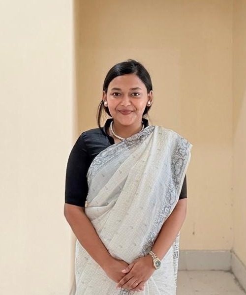

Farzana Reza Shifa
Sociology graduate from SUST who has actually built and run a small business — pitching investors, negotiating vendors, and managing supply and cash flow to fund her own studies. Now focused on entrepreneurship development: helping other entrepreneurs, especially women, turn capital into a working business through coaching, market access, and financial inclusion. Comfortable behind a camera, a mixing board, or a negotiating table — and just as comfortable turning scattered field data into a report someone can act on.

Business-first, creative by trade.
Hands-on experience founding and running a small enterprise, paired with sociology-trained understanding of women's economic decision-making — plus the reporting discipline and market-linkage instincts that turn capital into a working business.
Entrepreneurship & Enterprise
- Founded & ran a small business
- Investor pitching & fundraising
- Vendor negotiation & supply chains
- Cash-flow & budget management
- Client acquisition
Content & Market Access
- Audience-building & promotion
- High-retention storytelling
- Logic Pro / Audacity / Final Cut Pro
- OBS broadcast suite
- Case-study & field documentation
People & Reporting
- Sociology: economic decision-making
- Stakeholder interviews & needs assessment
- Fluent Bangla & English reporting
- Notion power user (data tracking)
- Dashboard & report building
What she's actually been doing.
Present
Digital Creator & Content Strategist
Self-employed
Built a genuine following with bike vlogs, productivity hacks, and AI experiments — top post reached 0.5M views, averaging 65K+ across the top 10. Records and mixes audio for indie singers.
2021
Freelance Tour Guide
International guests · Dhaka, Sylhet, Cox's Bazar
Guided tourists across the country, managing last-minute changes, cross-cultural questions, and on-ground logistics.
2020
Entrepreneurship & Freelance Work
Self-funded venture
Ran a small business to cover living costs while studying full-time — pitched investors, negotiated with vendors, managed cash flow and supply across three cities, and kept a transparent Notion dashboard live for stakeholders.
Sylhet to Dhaka, on paper.
2026
BSS. Sociology · GPA 3.35/4.00
SUST | Sylhet · expected June 2026
HSC | GPA 5.0
Viqarunnisa Noon
SSC | GPA 4.89
Govt. Model Girls
Off the clock.
Raising money is one problem. Turning that money into a business that actually survives is a bigger one — I've solved both for myself, and I want to help other entrepreneurs solve the second.